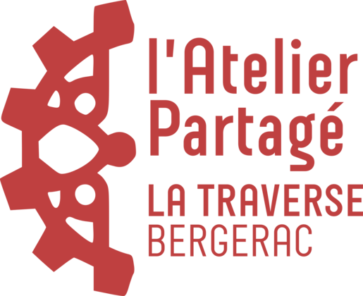
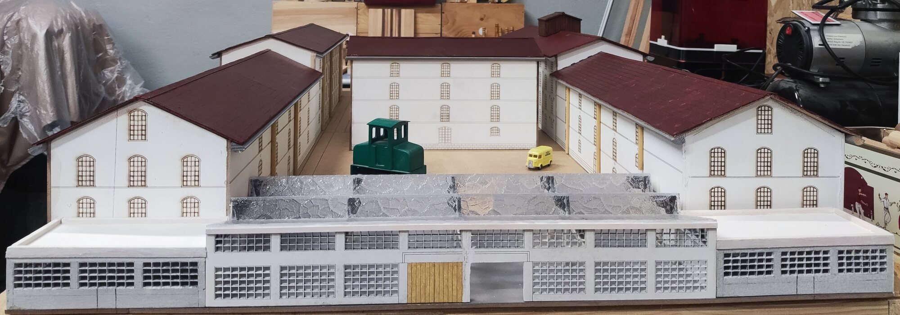

Maquette · échelle 1/100
Reconstitution de l'ancienne manufacture telle qu'elle existait vers 1950-1960, conçue par Jean-Michel Lorinquer d'après des photographies d'époque et des mesures relevées sur place, puis construite en ateliers participatifs. Près de 350 heures de travail au FabLab de l'Atelier Partagé ; certaines parties seront réalisées en septembre avec des jeunes des centres sociaux de Bergerac.
Première exposition : Fête du matrimoine, à La Traverse, le 19 septembre 2026.
Deux vues du site en 1959, à l'époque même que restitue la maquette : on y retrouve la voie d'embranchement, le château d'eau et la cour en U.

La maquette restitue l'ensemble du site industriel : les longs corps de bâtiment aux façades crème percées de fenêtres en plein cintre, les toitures de tuiles bordeaux, la cour centrale, le château d'eau, le pavillon de direction et sa haie, et la vaste halle couverte de verrières qui ferme le site au sud.
La vie du site y est figurée : une camionnette jaune dans la cour et le locotracteur gris Gaston Moyse avec ses deux wagons ouverts en bois de type Decauville, destinés à l'exportation du tabac par l'embranchement particulier de la SNCF. Un camion benne partait pour sa part de l'entrepôt des produits finis.
Relevé des proportions à partir des photographies d'époque, complété par des mesures prises sur place. Tracé sous Carbide Create.
Un support en MDF scindé en deux, pour rendre l'ensemble transportable malgré ses 1,87 m de long.
Tracé au sol de la disposition de chaque bâtiment avant montage, pour caler les alignements de la cour.
Pose des descentes, puis mise en teinte des toitures — d'un rouge vif au départ, patiné ensuite vers le bordeaux.
Conception du locotracteur gris et de ses deux wagons ouverts en bois de type Decauville, pour l'exportation du tabac par l'EPI de la SNCF.